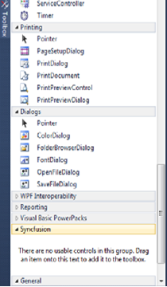
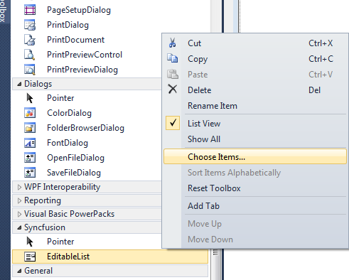
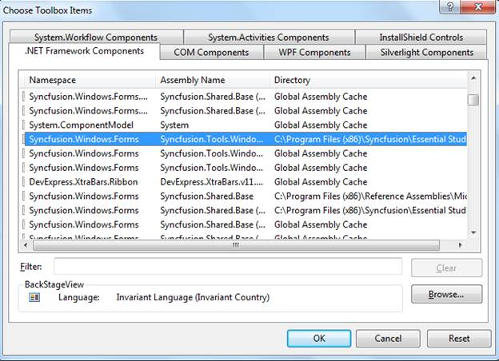

The following are the steps to configure VS Toolbox manually for Syncfusion tools:
1. Close all Visual Studio running instance.
2. Remove the *.tbd files except the toolbox.tbd from the following location:
Windows XP:
C:\Documents and Settings\{user name}\Local Settings\Application Data\Microsoft\VisualStudio\10.0
Vista/Windows 7:
C:\Users\{user name}\AppData\Local\Microsoft\VisualStudio\10.0
 Note:, It will take
some time to configure toolbox and creating tbd files, when initially loading
the toolbox in VS2010.
Note:, It will take
some time to configure toolbox and creating tbd files, when initially loading
the toolbox in VS2010.
3. Re-open the visual studio environment. The VS toolbox will be configured.
Adding Syncfusion controls in the customized toolbox
The following are the steps to add the Syncfusion controls in the user customized toolbox:
1. Open the Visual Studio and then create a new tab as Syncfusion in the toolbox.

Figure 147: New tab in the toolbox
2. Right-click and then select Choose Items.

Figure 148: Choose Items
The Choose Toolbox Items opens.

Figure 149: Choose Toolbox Items
3. Select all the Syncfusion assemblies and then click Ok. Assemblies will be copied to the newly created Syncfusion toolbox tab.